1cm：单帧、静止60帧、多视角与分阶段性能
ur7e_nvblox_in_hand · 仿真记录回放／保存数据评估 · 20张
voxel=0.01m；4体素截断=4cm；640×480；ESDF stride2。示例图来自这一组。
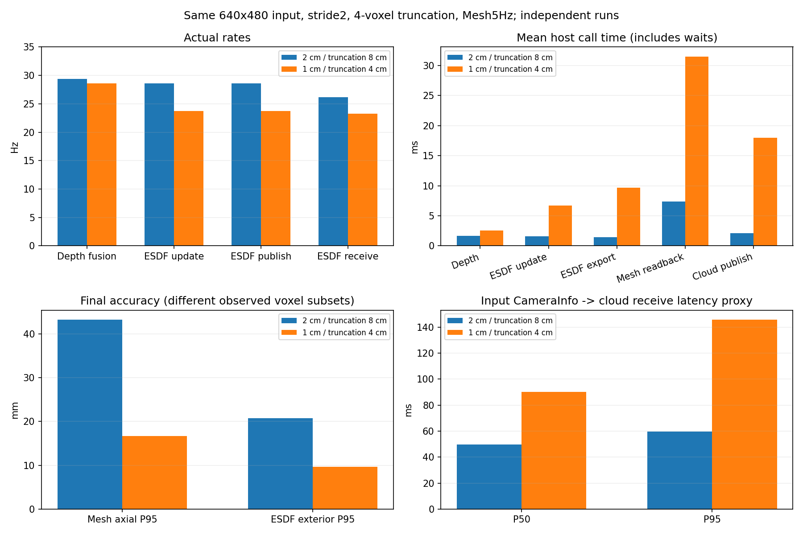
IMG001 · 1cm与2cm指标对比1800×1200 · 原始测试文件
ur7e_nvblox_in_hand/artifacts/voxel001_accuracy_pipeline_20261111/comparison_001_vs_002.png
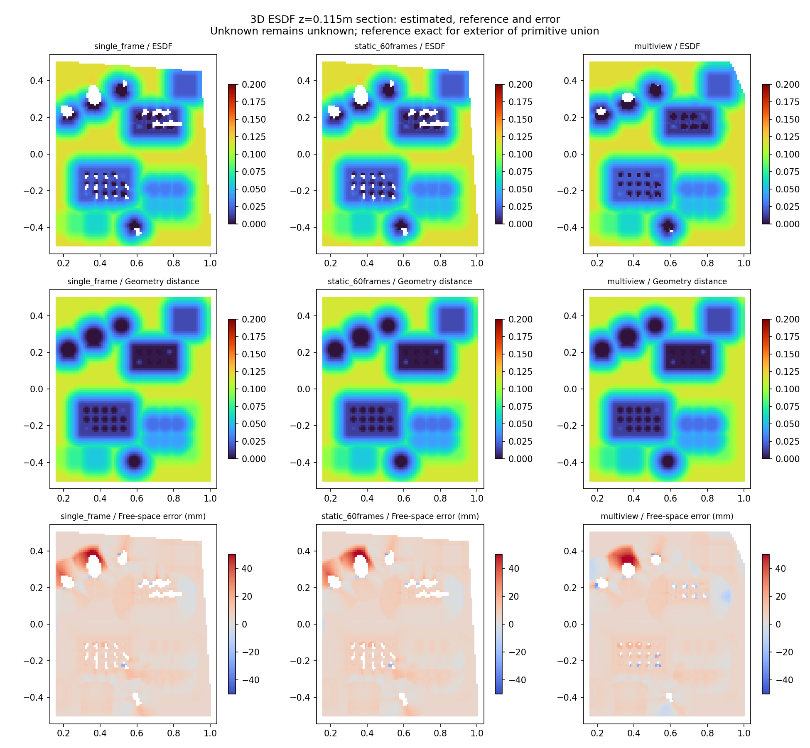
IMG002 · ESDF分阶段精度1950×1800 · 原始测试文件
ur7e_nvblox_in_hand/artifacts/voxel001_accuracy_pipeline_20261111/esdf_accuracy_stages.png
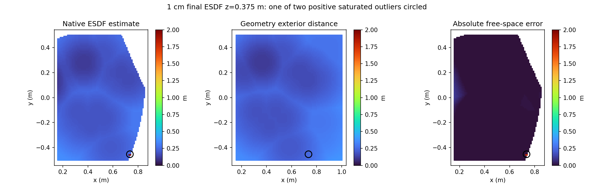
IMG003 · ESDF异常距离样本2100×675 · 原始测试文件
ur7e_nvblox_in_hand/artifacts/voxel001_accuracy_pipeline_20261111/esdf_outlier_detail.png
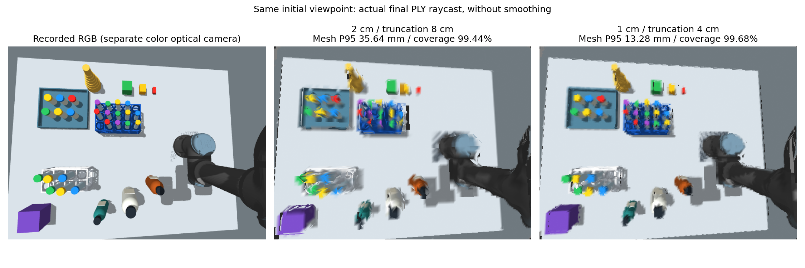
IMG004 · 1cm与2cm Mesh对比2250×750 · 原始测试文件
ur7e_nvblox_in_hand/artifacts/voxel001_accuracy_pipeline_20261111/mesh_001_vs_002.png
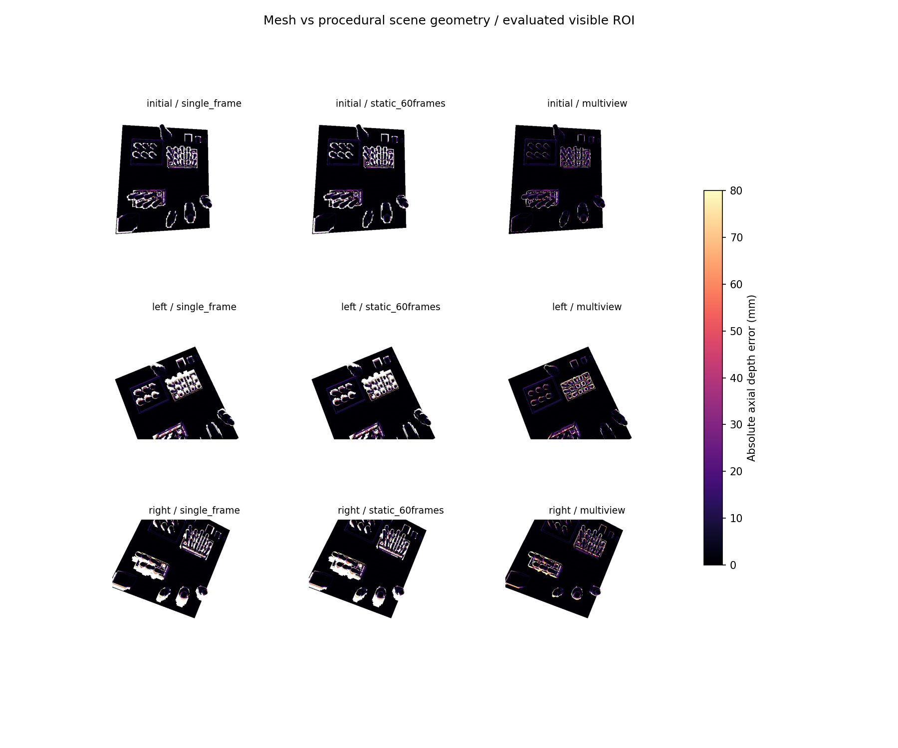
IMG005 · Mesh分阶段误差1800×1500 · 原始测试文件
ur7e_nvblox_in_hand/artifacts/voxel001_accuracy_pipeline_20261111/mesh_error_stages.png
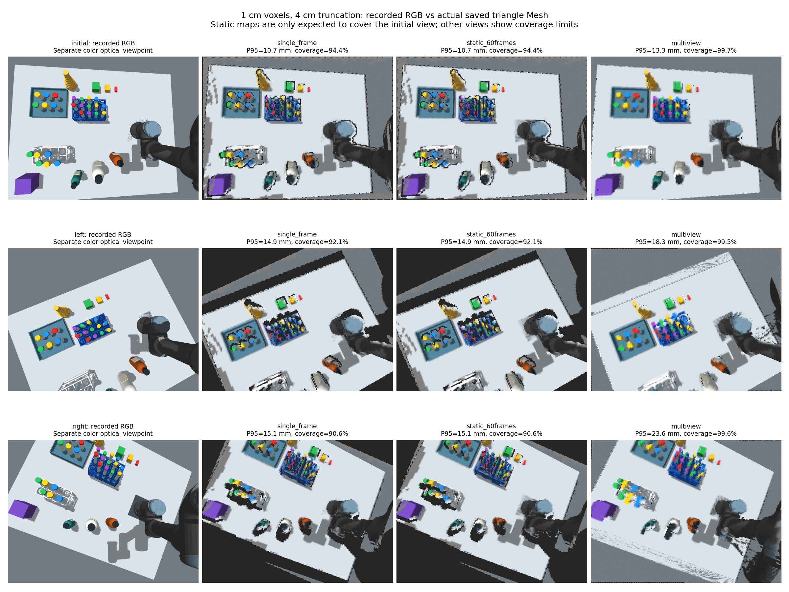
IMG006 · RGB与Mesh：单帧／静止60帧／多视角2400×1800 · 原始测试文件
ur7e_nvblox_in_hand/artifacts/voxel001_accuracy_pipeline_20261111/mesh_stage_comparison.png
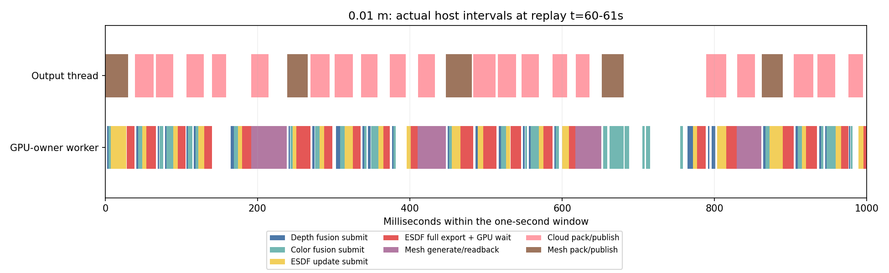
IMG007 · 实际消息处理与接收时线1950×600 · 原始测试文件
ur7e_nvblox_in_hand/artifacts/voxel001_accuracy_pipeline_20261111/pipeline_actual_timeline.png
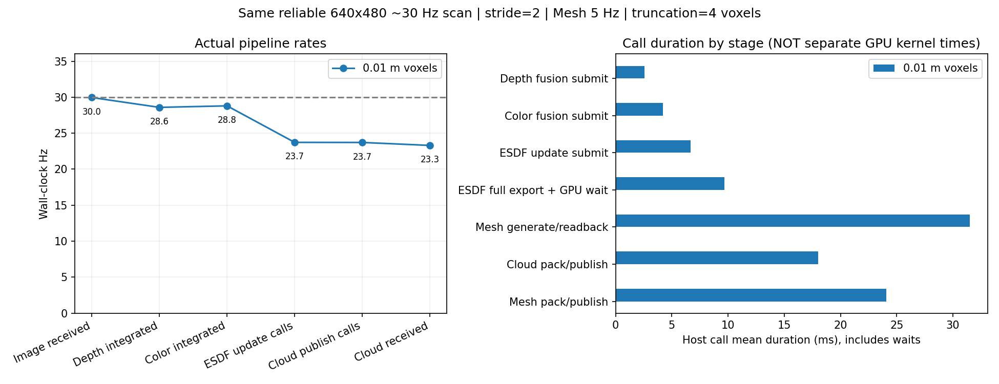
IMG008 · 各阶段频率与耗时1950×750 · 原始测试文件
ur7e_nvblox_in_hand/artifacts/voxel001_accuracy_pipeline_20261111/pipeline_rates_and_costs.png
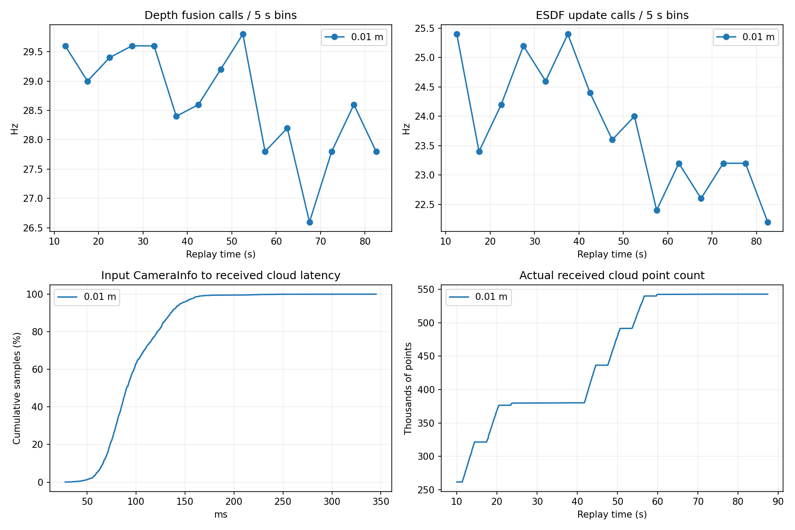
IMG009 · 各阶段随时间变化1800×1200 · 原始测试文件
ur7e_nvblox_in_hand/artifacts/voxel001_accuracy_pipeline_20261111/pipeline_time_series.png
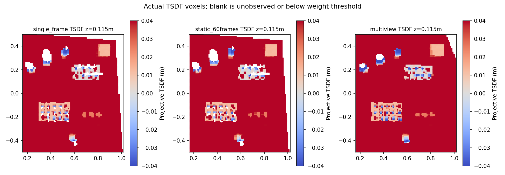
IMG010 · TSDF分阶段截面1950×675 · 原始测试文件
ur7e_nvblox_in_hand/artifacts/voxel001_accuracy_pipeline_20261111/tsdf_stages.png
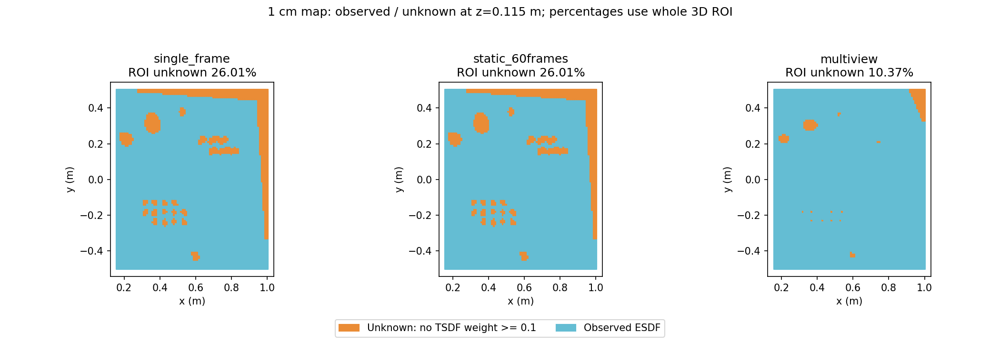
IMG011 · unknown分阶段变化2100×720 · 原始测试文件
ur7e_nvblox_in_hand/artifacts/voxel001_accuracy_pipeline_20261111/unknown_stages.png
IMG012 · initial_mesh · multiview640×480 · 原始测试文件
ur7e_nvblox_in_hand/artifacts/voxel001_accuracy_pipeline_20261111/multiview/initial_mesh.png
IMG013 · left_mesh · multiview640×480 · 原始测试文件
ur7e_nvblox_in_hand/artifacts/voxel001_accuracy_pipeline_20261111/multiview/left_mesh.png
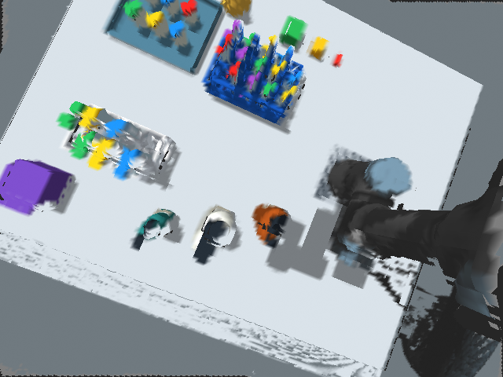
IMG014 · right_mesh · multiview640×480 · 原始测试文件
ur7e_nvblox_in_hand/artifacts/voxel001_accuracy_pipeline_20261111/multiview/right_mesh.png
IMG015 · initial_mesh · single_frame640×480 · 原始测试文件
ur7e_nvblox_in_hand/artifacts/voxel001_accuracy_pipeline_20261111/single_frame/initial_mesh.png
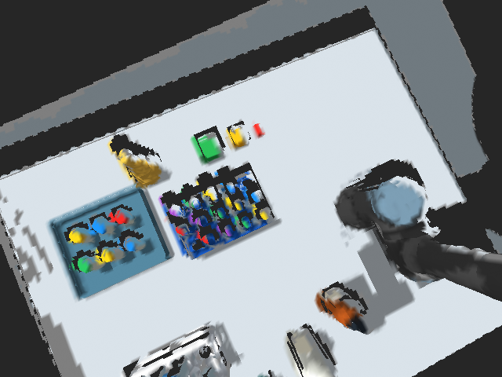
IMG016 · left_mesh · single_frame640×480 · 原始测试文件
ur7e_nvblox_in_hand/artifacts/voxel001_accuracy_pipeline_20261111/single_frame/left_mesh.png
IMG017 · right_mesh · single_frame640×480 · 原始测试文件
ur7e_nvblox_in_hand/artifacts/voxel001_accuracy_pipeline_20261111/single_frame/right_mesh.png
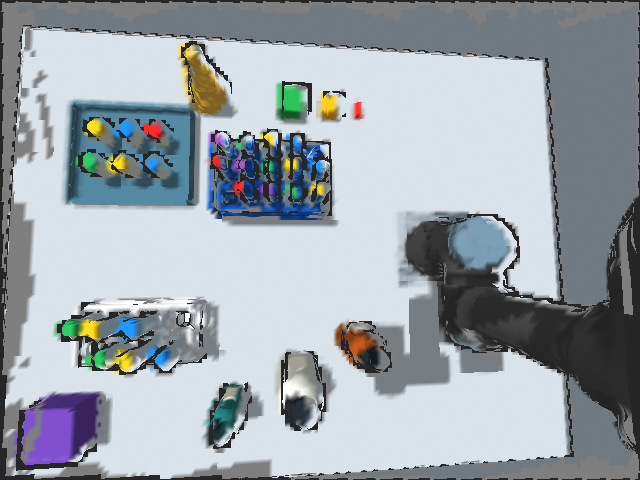
IMG018 · initial_mesh · static_60frames640×480 · 原始测试文件
ur7e_nvblox_in_hand/artifacts/voxel001_accuracy_pipeline_20261111/static_60frames/initial_mesh.png
IMG019 · left_mesh · static_60frames640×480 · 原始测试文件
ur7e_nvblox_in_hand/artifacts/voxel001_accuracy_pipeline_20261111/static_60frames/left_mesh.png
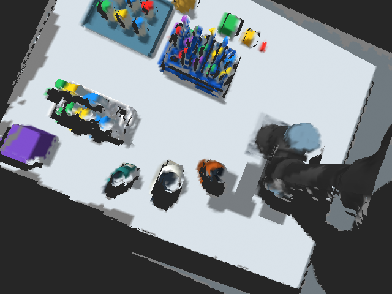
IMG020 · right_mesh · static_60frames640×480 · 原始测试文件
ur7e_nvblox_in_hand/artifacts/voxel001_accuracy_pipeline_20261111/static_60frames/right_mesh.png
5mm：重建精度、ESDF与1cm同范围对照
ur7e_nvblox_in_hand · 仿真记录回放／保存数据评估 · 23张
voxel=0.005m；截断2cm；有界工作台测试。无界大范围尝试曾OOM，不视为完整成功测试。
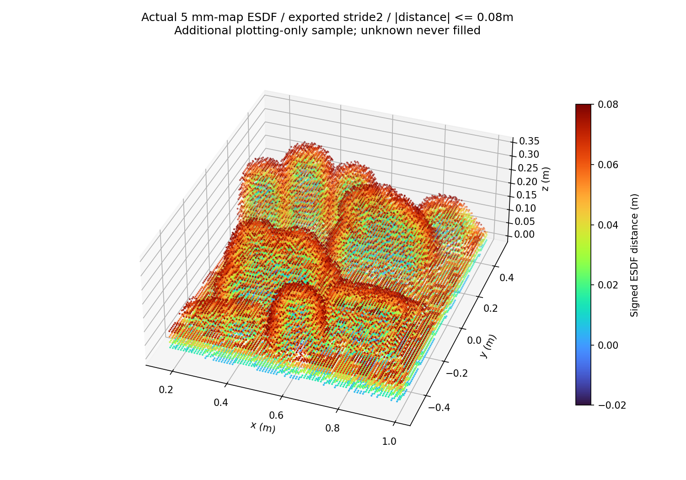
IMG021 · 3D ESDF已观测点与距离带1500×1050 · 原始测试文件
ur7e_nvblox_in_hand/artifacts/voxel0005_accuracy_pipeline_20261111/esdf_3d_observed_band.png
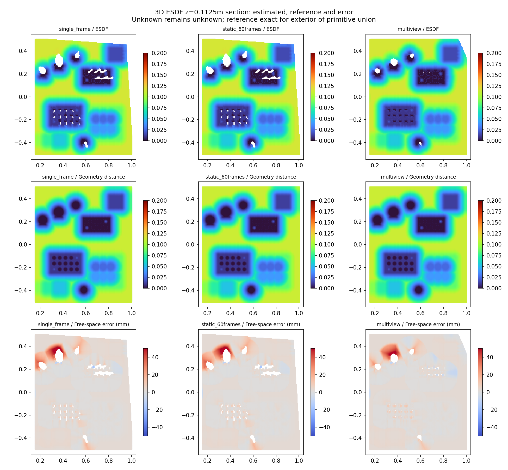
IMG022 · ESDF分阶段精度1950×1800 · 原始测试文件
ur7e_nvblox_in_hand/artifacts/voxel0005_accuracy_pipeline_20261111/esdf_accuracy_stages.png
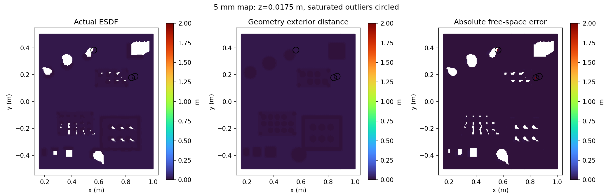
IMG023 · ESDF异常距离样本2100×675 · 原始测试文件
ur7e_nvblox_in_hand/artifacts/voxel0005_accuracy_pipeline_20261111/esdf_outlier_detail.png
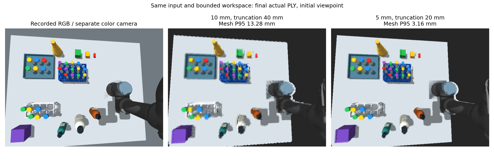
IMG024 · 5mm与1cm Mesh对比2250×750 · 原始测试文件
ur7e_nvblox_in_hand/artifacts/voxel0005_accuracy_pipeline_20261111/mesh_5mm_vs_10mm.png
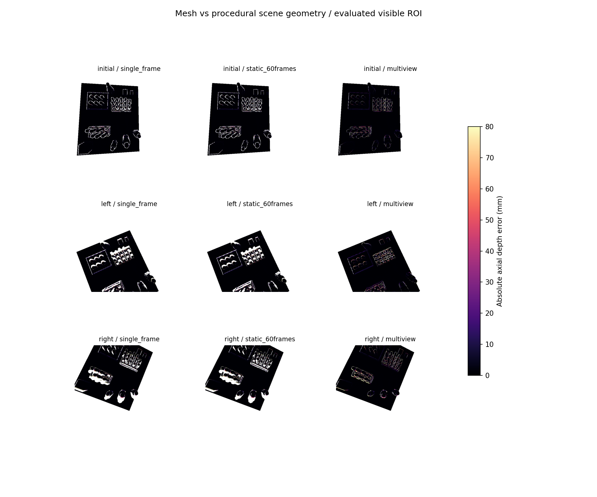
IMG025 · Mesh分阶段误差1800×1500 · 原始测试文件
ur7e_nvblox_in_hand/artifacts/voxel0005_accuracy_pipeline_20261111/mesh_error_stages.png
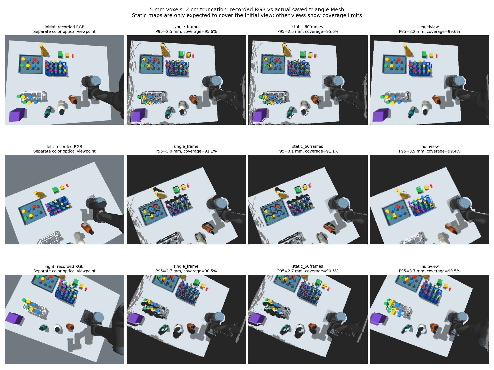
IMG026 · RGB与Mesh：单帧／静止60帧／多视角2400×1800 · 原始测试文件
ur7e_nvblox_in_hand/artifacts/voxel0005_accuracy_pipeline_20261111/mesh_stage_comparison.png
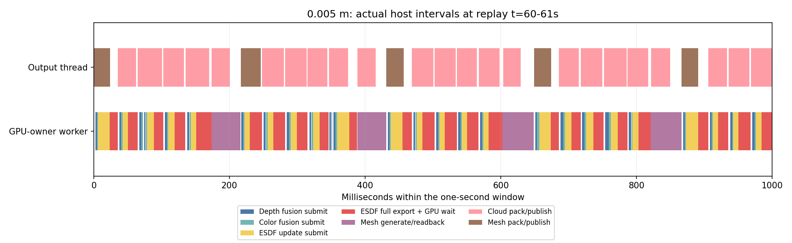
IMG027 · 实际消息处理与接收时线1950×600 · 原始测试文件
ur7e_nvblox_in_hand/artifacts/voxel0005_accuracy_pipeline_20261111/pipeline_actual_timeline.png
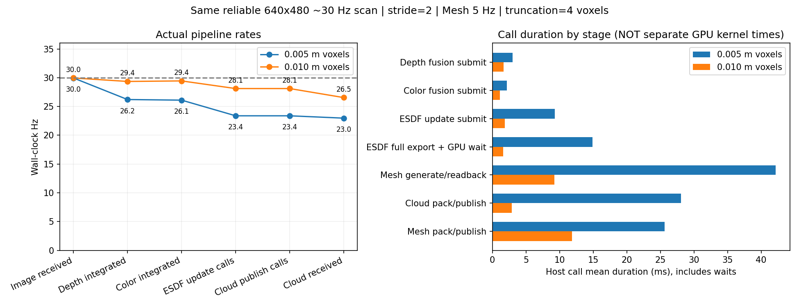
IMG028 · 各阶段频率与耗时1950×750 · 原始测试文件
ur7e_nvblox_in_hand/artifacts/voxel0005_accuracy_pipeline_20261111/pipeline_rates_and_costs.png
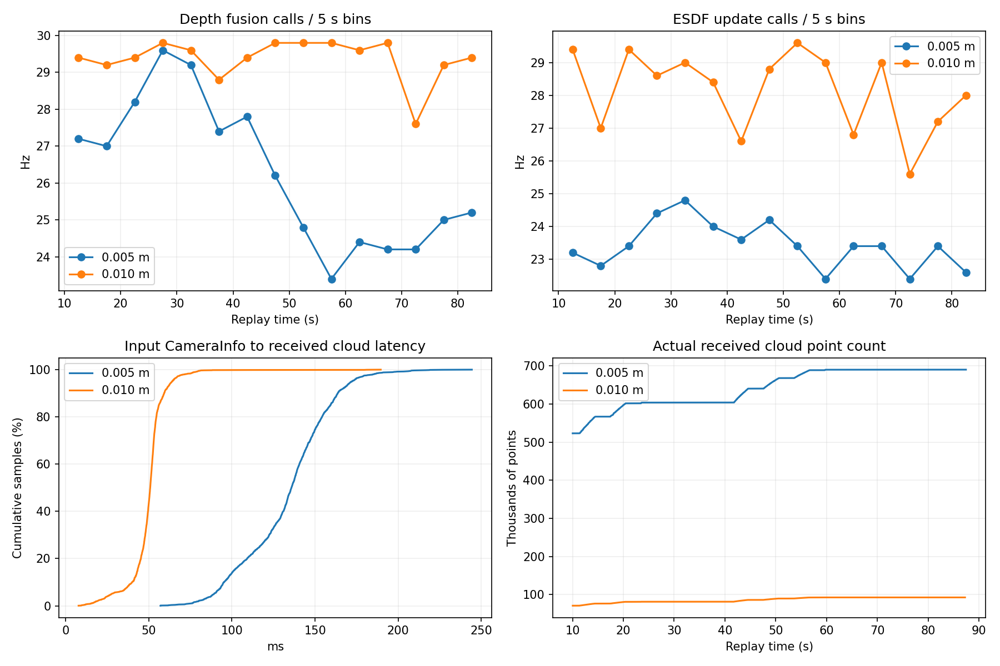
IMG029 · 各阶段随时间变化1800×1200 · 原始测试文件
ur7e_nvblox_in_hand/artifacts/voxel0005_accuracy_pipeline_20261111/pipeline_time_series.png
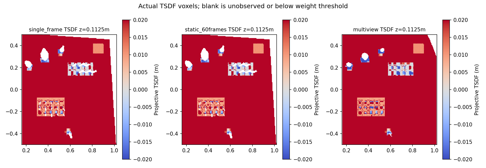
IMG030 · TSDF分阶段截面1950×675 · 原始测试文件
ur7e_nvblox_in_hand/artifacts/voxel0005_accuracy_pipeline_20261111/tsdf_stages.png
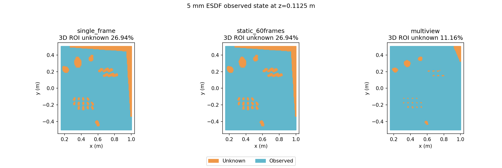
IMG031 · unknown分阶段变化2100×705 · 原始测试文件
ur7e_nvblox_in_hand/artifacts/voxel0005_accuracy_pipeline_20261111/unknown_stages.png
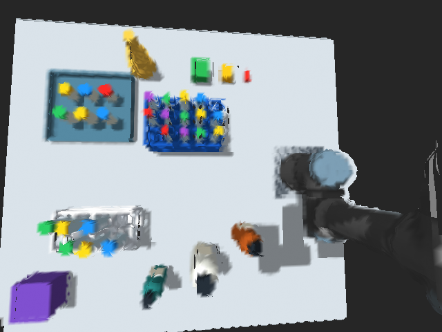
IMG032 · initial_mesh · matched_1cm640×480 · 原始测试文件
ur7e_nvblox_in_hand/artifacts/voxel0005_accuracy_pipeline_20261111/matched_1cm/initial_mesh.png
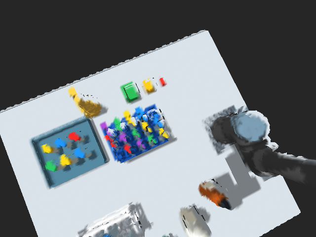
IMG033 · left_mesh · matched_1cm640×480 · 原始测试文件
ur7e_nvblox_in_hand/artifacts/voxel0005_accuracy_pipeline_20261111/matched_1cm/left_mesh.png
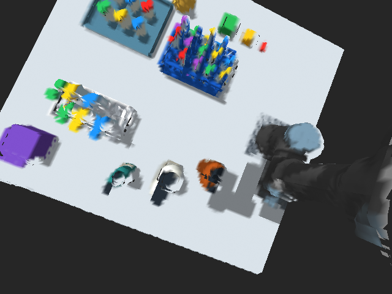
IMG034 · right_mesh · matched_1cm640×480 · 原始测试文件
ur7e_nvblox_in_hand/artifacts/voxel0005_accuracy_pipeline_20261111/matched_1cm/right_mesh.png
IMG035 · initial_mesh · multiview640×480 · 原始测试文件
ur7e_nvblox_in_hand/artifacts/voxel0005_accuracy_pipeline_20261111/multiview/initial_mesh.png
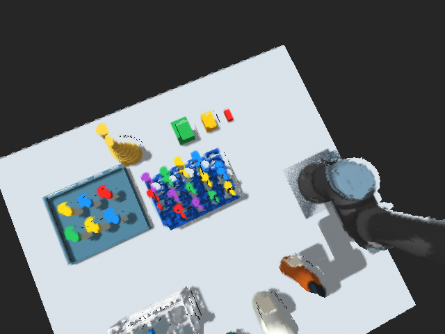
IMG036 · left_mesh · multiview640×480 · 原始测试文件
ur7e_nvblox_in_hand/artifacts/voxel0005_accuracy_pipeline_20261111/multiview/left_mesh.png
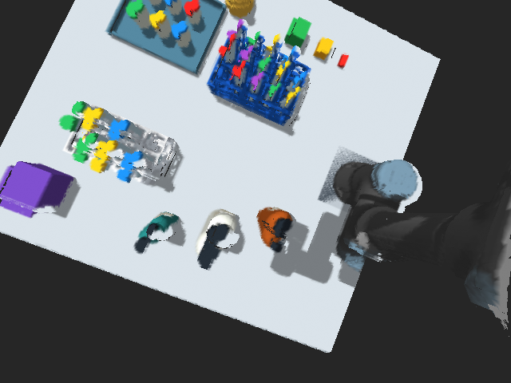
IMG037 · right_mesh · multiview640×480 · 原始测试文件
ur7e_nvblox_in_hand/artifacts/voxel0005_accuracy_pipeline_20261111/multiview/right_mesh.png
IMG038 · initial_mesh · single_frame640×480 · 原始测试文件
ur7e_nvblox_in_hand/artifacts/voxel0005_accuracy_pipeline_20261111/single_frame/initial_mesh.png
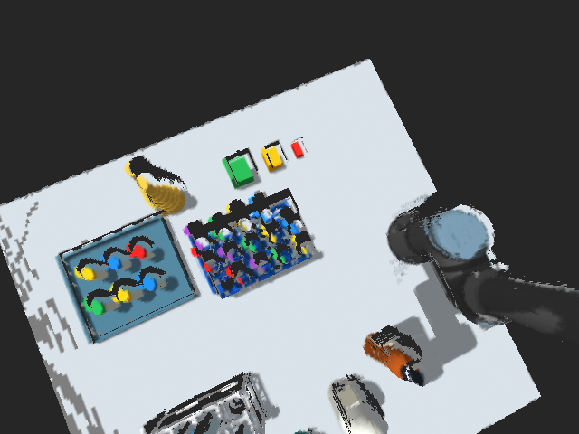
IMG039 · left_mesh · single_frame640×480 · 原始测试文件
ur7e_nvblox_in_hand/artifacts/voxel0005_accuracy_pipeline_20261111/single_frame/left_mesh.png
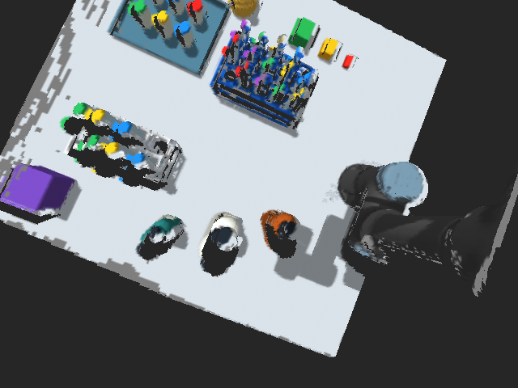
IMG040 · right_mesh · single_frame640×480 · 原始测试文件
ur7e_nvblox_in_hand/artifacts/voxel0005_accuracy_pipeline_20261111/single_frame/right_mesh.png
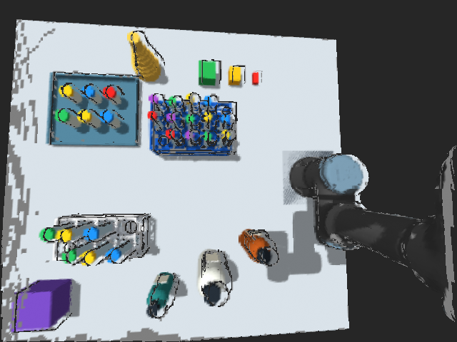
IMG041 · initial_mesh · static_60frames640×480 · 原始测试文件
ur7e_nvblox_in_hand/artifacts/voxel0005_accuracy_pipeline_20261111/static_60frames/initial_mesh.png
IMG042 · left_mesh · static_60frames640×480 · 原始测试文件
ur7e_nvblox_in_hand/artifacts/voxel0005_accuracy_pipeline_20261111/static_60frames/left_mesh.png
IMG043 · right_mesh · static_60frames640×480 · 原始测试文件
ur7e_nvblox_in_hand/artifacts/voxel0005_accuracy_pipeline_20261111/static_60frames/right_mesh.png
2cm：重建精度与ESDF分阶段对照
ur7e_nvblox_in_hand · 仿真记录回放／保存数据评估 · 17张
voxel=0.02m；截断8cm；640×480；stride2。覆盖改善不必然意味着误差下降。
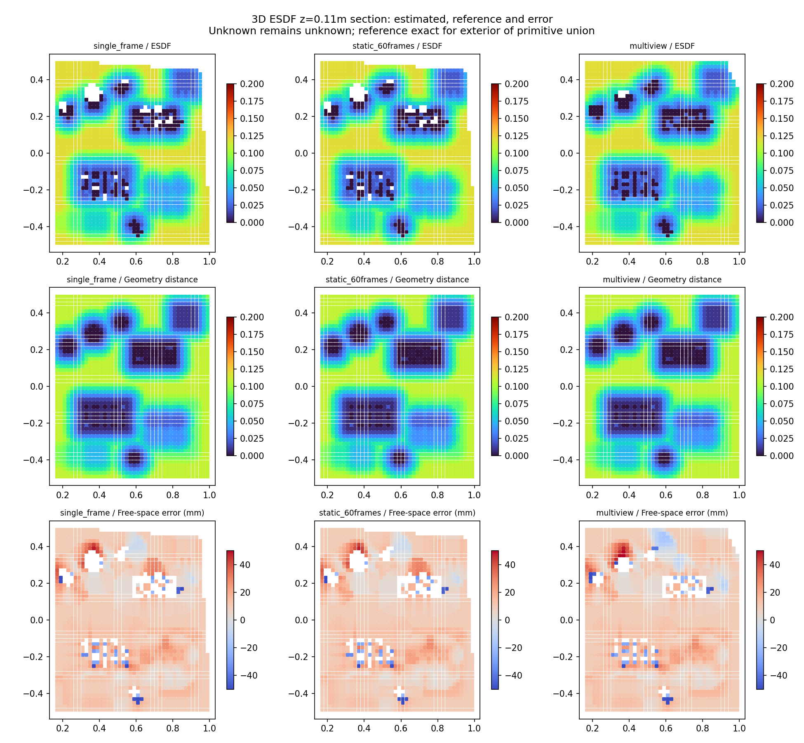
IMG044 · ESDF分阶段精度1950×1800 · 原始测试文件
ur7e_nvblox_in_hand/artifacts/voxel002_accuracy_pipeline_20261111/esdf_accuracy_stages.png
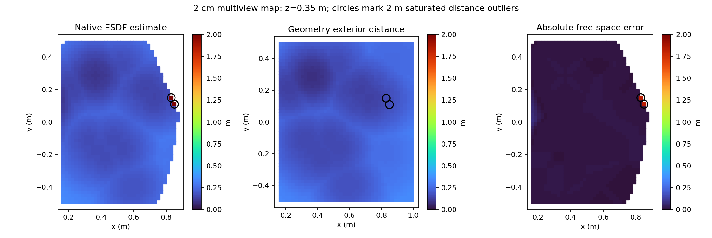
IMG045 · ESDF异常距离样本2240×752 · 原始测试文件
ur7e_nvblox_in_hand/artifacts/voxel002_accuracy_pipeline_20261111/esdf_outlier_detail.png
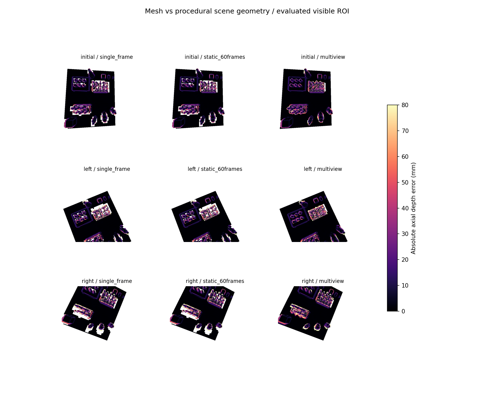
IMG046 · Mesh分阶段误差1800×1500 · 原始测试文件
ur7e_nvblox_in_hand/artifacts/voxel002_accuracy_pipeline_20261111/mesh_error_stages.png
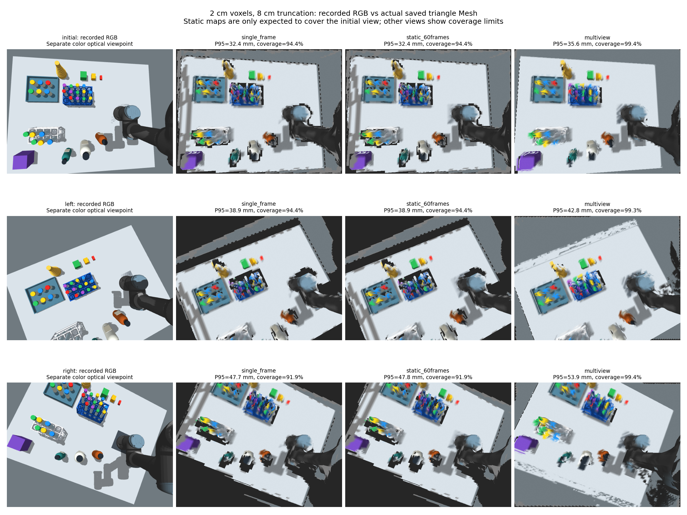
IMG047 · RGB与Mesh：单帧／静止60帧／多视角2400×1800 · 原始测试文件
ur7e_nvblox_in_hand/artifacts/voxel002_accuracy_pipeline_20261111/mesh_stage_comparison.png
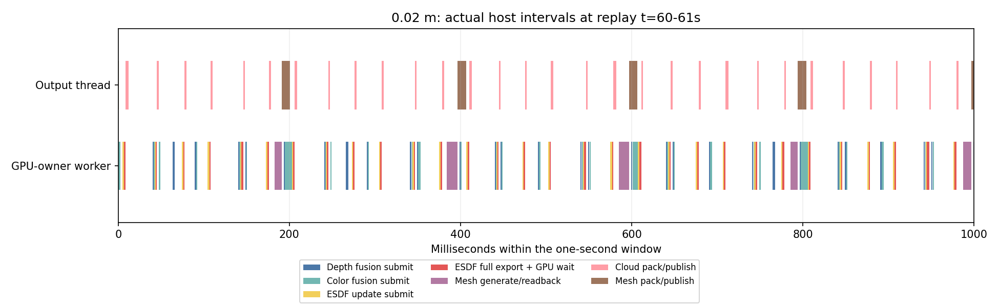
IMG048 · 实际消息处理与接收时线1950×600 · 原始测试文件
ur7e_nvblox_in_hand/artifacts/voxel002_accuracy_pipeline_20261111/pipeline_actual_timeline.png
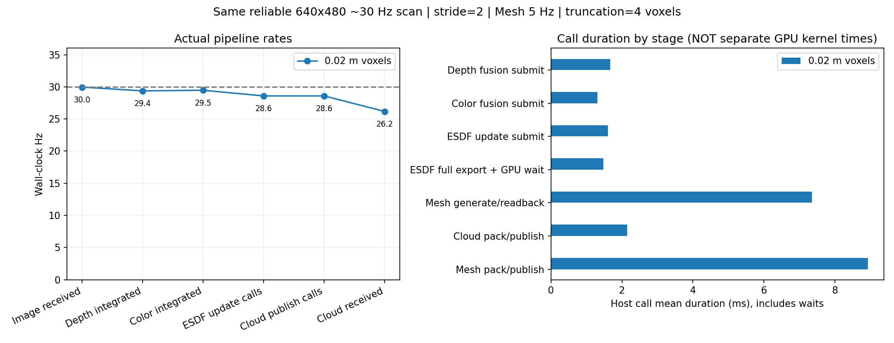
IMG049 · 各阶段频率与耗时1950×750 · 原始测试文件
ur7e_nvblox_in_hand/artifacts/voxel002_accuracy_pipeline_20261111/pipeline_rates_and_costs.png
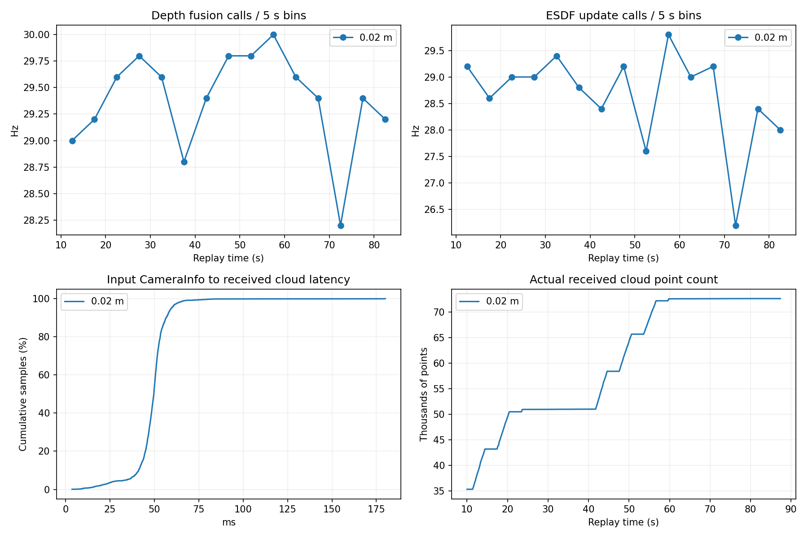
IMG050 · 各阶段随时间变化1800×1200 · 原始测试文件
ur7e_nvblox_in_hand/artifacts/voxel002_accuracy_pipeline_20261111/pipeline_time_series.png
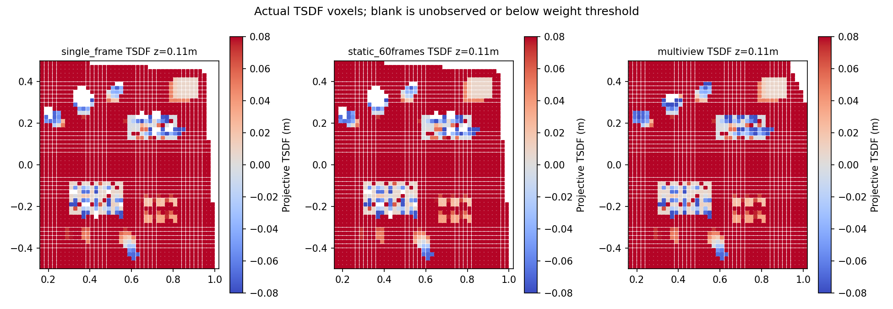
IMG051 · TSDF分阶段截面1950×675 · 原始测试文件
ur7e_nvblox_in_hand/artifacts/voxel002_accuracy_pipeline_20261111/tsdf_stages.png
IMG052 · initial_mesh · multiview640×480 · 原始测试文件
ur7e_nvblox_in_hand/artifacts/voxel002_accuracy_pipeline_20261111/multiview/initial_mesh.png
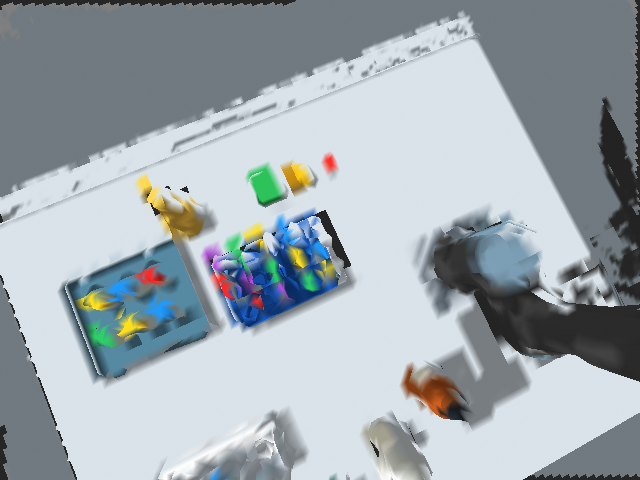
IMG053 · left_mesh · multiview640×480 · 原始测试文件
ur7e_nvblox_in_hand/artifacts/voxel002_accuracy_pipeline_20261111/multiview/left_mesh.png
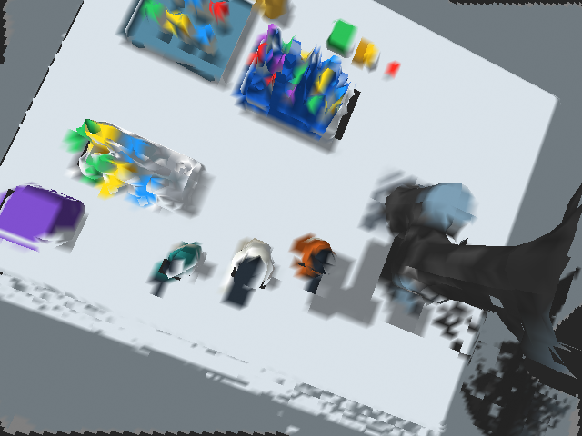
IMG054 · right_mesh · multiview640×480 · 原始测试文件
ur7e_nvblox_in_hand/artifacts/voxel002_accuracy_pipeline_20261111/multiview/right_mesh.png
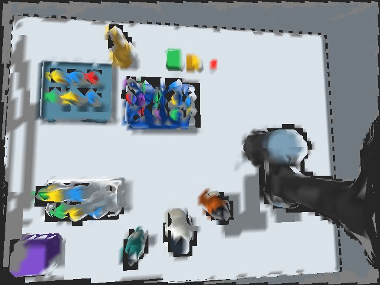
IMG055 · initial_mesh · single_frame640×480 · 原始测试文件
ur7e_nvblox_in_hand/artifacts/voxel002_accuracy_pipeline_20261111/single_frame/initial_mesh.png
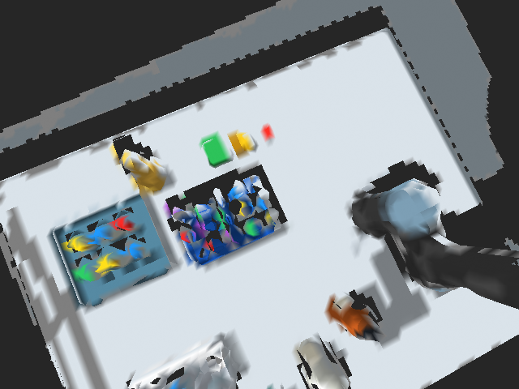
IMG056 · left_mesh · single_frame640×480 · 原始测试文件
ur7e_nvblox_in_hand/artifacts/voxel002_accuracy_pipeline_20261111/single_frame/left_mesh.png
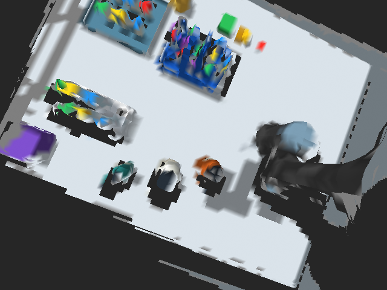
IMG057 · right_mesh · single_frame640×480 · 原始测试文件
ur7e_nvblox_in_hand/artifacts/voxel002_accuracy_pipeline_20261111/single_frame/right_mesh.png
IMG058 · initial_mesh · static_60frames640×480 · 原始测试文件
ur7e_nvblox_in_hand/artifacts/voxel002_accuracy_pipeline_20261111/static_60frames/initial_mesh.png
IMG059 · left_mesh · static_60frames640×480 · 原始测试文件
ur7e_nvblox_in_hand/artifacts/voxel002_accuracy_pipeline_20261111/static_60frames/left_mesh.png
IMG060 · right_mesh · static_60frames640×480 · 原始测试文件
ur7e_nvblox_in_hand/artifacts/voxel002_accuracy_pipeline_20261111/static_60frames/right_mesh.png
5mm现场仿真：静止、左右扫描、再静止
ur7e_nvblox_in_hand · 实时Gazebo／已有累积地图 · 11张
640×480；stride2；GUI开启；左右各4cm扫描。不是空地图单帧对照；扫描ESDF实际接收约10.47Hz。
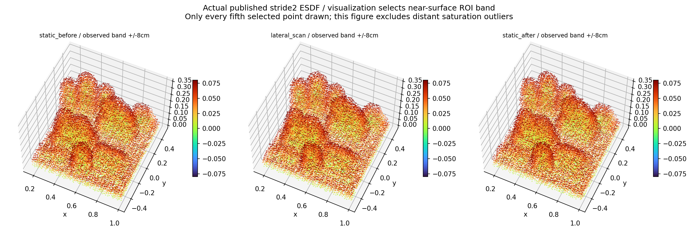
IMG061 · 3D ESDF展示2250×750 · 原始测试文件
ur7e_nvblox_in_hand/artifacts/live_5mm_scan_20261111/esdf_3d.png
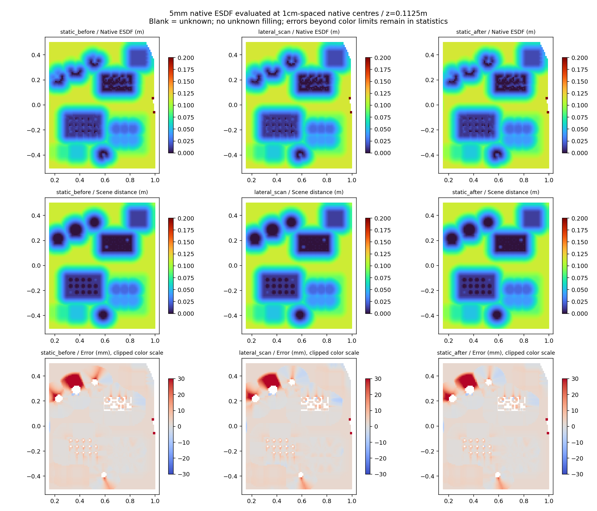
IMG062 · ESDF截面、真值与误差1960×1680 · 原始测试文件
ur7e_nvblox_in_hand/artifacts/live_5mm_scan_20261111/esdf_sections.png
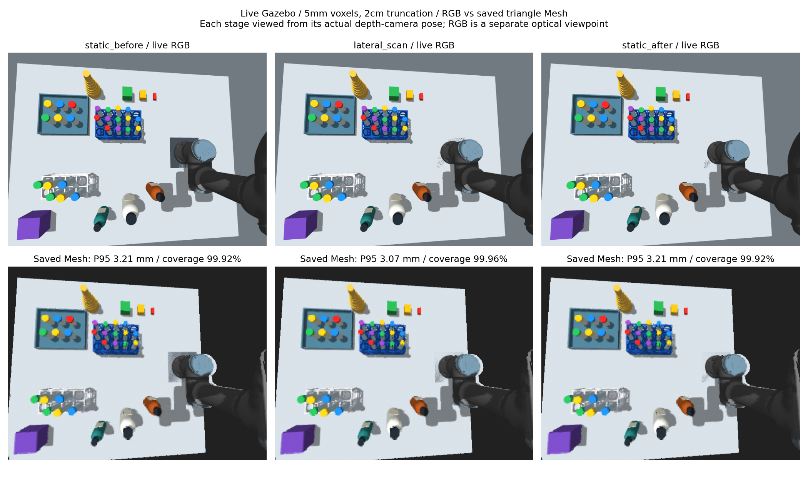
IMG063 · 实际RGB与保存Mesh分阶段对照2100×1260 · 原始测试文件
ur7e_nvblox_in_hand/artifacts/live_5mm_scan_20261111/mesh_live_comparison.png
IMG064 · 静止／扫描／停止实时性对比2400×750 · 原始测试文件
ur7e_nvblox_in_hand/artifacts/live_5mm_scan_20261111/realtime_stages.png
IMG065 · 扫描后RViz截图1440×900 · 原始测试文件
ur7e_nvblox_in_hand/artifacts/live_5mm_scan_20261111/rviz_after_scan.png
IMG066 · mesh_render · lateral_scan640×480 · 原始测试文件
ur7e_nvblox_in_hand/artifacts/live_5mm_scan_20261111/lateral_scan/mesh_render.png
IMG067 · RGB原始输入 · lateral_scan640×480 · 原始测试文件
ur7e_nvblox_in_hand/artifacts/live_5mm_scan_20261111/lateral_scan/rgb.png
IMG068 · mesh_render · static_after640×480 · 原始测试文件
ur7e_nvblox_in_hand/artifacts/live_5mm_scan_20261111/static_after/mesh_render.png
IMG069 · RGB原始输入 · static_after640×480 · 原始测试文件
ur7e_nvblox_in_hand/artifacts/live_5mm_scan_20261111/static_after/rgb.png
IMG070 · mesh_render · static_before640×480 · 原始测试文件
ur7e_nvblox_in_hand/artifacts/live_5mm_scan_20261111/static_before/mesh_render.png
IMG071 · RGB原始输入 · static_before640×480 · 原始测试文件
ur7e_nvblox_in_hand/artifacts/live_5mm_scan_20261111/static_before/rgb.png
输入缺帧修复前后与实际ESDF/Mesh
ur7e_nvblox_in_hand · 仿真采集对照＋回放 · 2张
可靠性与队列配置一同调整；输入由约24Hz恢复到约30Hz。各图详细条件见原报告。
流水线：频率、耗时、时间序列与消息时线
ur7e_nvblox_in_hand · 仿真记录回放 · 3张
展示已有调用计数与订阅接收；不是GPU纯核时长，也不是RViz FPS。
IMG074 · 实际消息处理与接收时线1950×900 · 原始测试文件
ur7e_nvblox_in_hand/artifacts/pipeline_realtime_20261110/pipeline_actual_timeline.png
IMG075 · 各阶段频率与耗时1950×750 · 原始测试文件
ur7e_nvblox_in_hand/artifacts/pipeline_realtime_20261110/pipeline_rates_and_costs.png
IMG076 · 各阶段随时间变化1800×1200 · 原始测试文件
ur7e_nvblox_in_hand/artifacts/pipeline_realtime_20261110/pipeline_time_series.png
ESDF stride2与stride3
ur7e_nvblox_in_hand · 仿真记录回放 · 9张
显示抽样间隔对比；不是原生体素精度对比。views_failed_partial为失败尝试的中间帧。
IMG077 · stride2与stride3 ESDF1960×1540 · 原始测试文件
ur7e_nvblox_in_hand/artifacts/stride23_replay_20261110/esdf_stride2_vs_stride3.png
IMG078 · 原始深度表面点云不同视角2100×750 · 原始测试文件
ur7e_nvblox_in_hand/artifacts/stride23_replay_20261110/raw_cloud_views.png
IMG079 · stride2与stride3实时性1950×1350 · 原始测试文件
ur7e_nvblox_in_hand/artifacts/stride23_replay_20261110/realtime_stride2_vs_stride3.png
IMG080 · RGB原始输入640×480 · 原始测试文件
ur7e_nvblox_in_hand/artifacts/stride23_replay_20261110/rgb.png
IMG081 · RGB与深度输入1800×750 · 原始测试文件
ur7e_nvblox_in_hand/artifacts/stride23_replay_20261110/rgb_depth.png
IMG082 · RGB原始输入 · views_failed_partial / 000640×480 · 原始测试文件
ur7e_nvblox_in_hand/artifacts/stride23_replay_20261110/views_failed_partial/000/rgb.png
IMG083 · RGB原始输入 · views_failed_partial / 015640×480 · 原始测试文件
ur7e_nvblox_in_hand/artifacts/stride23_replay_20261110/views_failed_partial/015/rgb.png
IMG084 · RGB原始输入 · views_failed_partial / 030640×480 · 原始测试文件
ur7e_nvblox_in_hand/artifacts/stride23_replay_20261110/views_failed_partial/030/rgb.png
IMG085 · RGB原始输入 · views_failed_partial / 045640×480 · 原始测试文件
ur7e_nvblox_in_hand/artifacts/stride23_replay_20261110/views_failed_partial/045/rgb.png
1cm早期实验台测试及2cm对照
ur7e_nvblox_in_hand · Gazebo采集／保存数据评估 · 22张
1cm地图、stride2；本组与11月11日阶段测试是不同测试批次。
IMG086 · 3D ESDF展示1500×1200 · 原始测试文件
ur7e_nvblox_in_hand/artifacts/lab_1cm_stride2_20261110/esdf_3d.png
IMG087 · ESDF精度分析2400×750 · 原始测试文件
ur7e_nvblox_in_hand/artifacts/lab_1cm_stride2_20261110/esdf_accuracy.png
IMG088 · 2cm与1cm Mesh对比2560×960 · 原始测试文件
ur7e_nvblox_in_hand/artifacts/lab_1cm_stride2_20261110/mesh_2cm_vs_1cm.png
IMG089 · Mesh精度分析2250×1350 · 原始测试文件
ur7e_nvblox_in_hand/artifacts/lab_1cm_stride2_20261110/mesh_accuracy.png
IMG090 · 保存的彩色Mesh渲染640×480 · 原始测试文件
ur7e_nvblox_in_hand/artifacts/lab_1cm_stride2_20261110/mesh_rgb_render.png
IMG091 · 原始深度表面点云不同视角2100×750 · 原始测试文件
ur7e_nvblox_in_hand/artifacts/lab_1cm_stride2_20261110/raw_cloud_views.png

IMG092 · RGB原始输入640×480 · 原始测试文件
ur7e_nvblox_in_hand/artifacts/lab_1cm_stride2_20261110/rgb.png

IMG093 · RGB与深度输入1800×750 · 原始测试文件
ur7e_nvblox_in_hand/artifacts/lab_1cm_stride2_20261110/rgb_depth.png
IMG094 · RGB原始输入 · views / 000640×480 · 原始测试文件
ur7e_nvblox_in_hand/artifacts/lab_1cm_stride2_20261110/views/000/rgb.png
IMG095 · RGB原始输入 · views / 015640×480 · 原始测试文件
ur7e_nvblox_in_hand/artifacts/lab_1cm_stride2_20261110/views/015/rgb.png
IMG096 · RGB原始输入 · views / 030640×480 · 原始测试文件
ur7e_nvblox_in_hand/artifacts/lab_1cm_stride2_20261110/views/030/rgb.png
IMG097 · RGB原始输入 · views / 045640×480 · 原始测试文件
ur7e_nvblox_in_hand/artifacts/lab_1cm_stride2_20261110/views/045/rgb.png
IMG098 · RGB原始输入 · views / 060640×480 · 原始测试文件
ur7e_nvblox_in_hand/artifacts/lab_1cm_stride2_20261110/views/060/rgb.png
IMG099 · RGB原始输入 · views / 075640×480 · 原始测试文件
ur7e_nvblox_in_hand/artifacts/lab_1cm_stride2_20261110/views/075/rgb.png
IMG100 · RGB原始输入 · views / 090640×480 · 原始测试文件
ur7e_nvblox_in_hand/artifacts/lab_1cm_stride2_20261110/views/090/rgb.png
IMG101 · RGB原始输入 · views / 105640×480 · 原始测试文件
ur7e_nvblox_in_hand/artifacts/lab_1cm_stride2_20261110/views/105/rgb.png
IMG102 · RGB原始输入 · views / 120640×480 · 原始测试文件
ur7e_nvblox_in_hand/artifacts/lab_1cm_stride2_20261110/views/120/rgb.png
IMG103 · RGB原始输入 · views / 135640×480 · 原始测试文件
ur7e_nvblox_in_hand/artifacts/lab_1cm_stride2_20261110/views/135/rgb.png
IMG104 · RGB原始输入 · views / 150640×480 · 原始测试文件
ur7e_nvblox_in_hand/artifacts/lab_1cm_stride2_20261110/views/150/rgb.png
IMG105 · RGB原始输入 · views / 165640×480 · 原始测试文件
ur7e_nvblox_in_hand/artifacts/lab_1cm_stride2_20261110/views/165/rgb.png
IMG106 · RGB原始输入 · views / 180640×480 · 原始测试文件
ur7e_nvblox_in_hand/artifacts/lab_1cm_stride2_20261110/views/180/rgb.png
IMG107 · RGB原始输入 · views / 182640×480 · 原始测试文件
ur7e_nvblox_in_hand/artifacts/lab_1cm_stride2_20261110/views/182/rgb.png
实验台初轮Mesh与3D ESDF精度
ur7e_nvblox_in_hand · 仿真测试／保存数据评估 · 7张
原始输入、Mesh渲染及真值误差图；以本轮原报告参数为准。
IMG108 · 3D ESDF展示1500×1200 · 原始测试文件
ur7e_nvblox_in_hand/artifacts/lab_accuracy_20261110/esdf_3d.png
IMG109 · ESDF精度分析2400×750 · 原始测试文件
ur7e_nvblox_in_hand/artifacts/lab_accuracy_20261110/esdf_accuracy.png
IMG110 · Mesh精度分析2250×1350 · 原始测试文件
ur7e_nvblox_in_hand/artifacts/lab_accuracy_20261110/mesh_accuracy.png
IMG111 · 保存的彩色Mesh渲染640×480 · 原始测试文件
ur7e_nvblox_in_hand/artifacts/lab_accuracy_20261110/mesh_rgb_render.png

IMG112 · 原始深度表面点云不同视角2100×750 · 原始测试文件
ur7e_nvblox_in_hand/artifacts/lab_accuracy_20261110/raw_cloud_views.png
IMG113 · RGB原始输入640×480 · 原始测试文件
ur7e_nvblox_in_hand/artifacts/lab_accuracy_20261110/rgb.png
IMG114 · RGB与深度输入1800×750 · 原始测试文件
ur7e_nvblox_in_hand/artifacts/lab_accuracy_20261110/rgb_depth.png
实验台多视角补全与相机轨迹
ur7e_nvblox_in_hand · Gazebo运动采集／保存数据评估 · 24张
对比静止与多视角覆盖，包含真实相机轨迹与沿途RGB帧。
IMG115 · 实际相机运动轨迹2100×600 · 原始测试文件
ur7e_nvblox_in_hand/artifacts/lab_multiview_20261110/actual_camera_motion.png
IMG116 · 3D ESDF展示1500×1200 · 原始测试文件
ur7e_nvblox_in_hand/artifacts/lab_multiview_20261110/esdf_3d.png
IMG117 · ESDF精度分析2400×750 · 原始测试文件
ur7e_nvblox_in_hand/artifacts/lab_multiview_20261110/esdf_accuracy.png
IMG118 · Mesh精度分析2250×1350 · 原始测试文件
ur7e_nvblox_in_hand/artifacts/lab_multiview_20261110/mesh_accuracy.png
IMG119 · 保存的彩色Mesh渲染640×480 · 原始测试文件
ur7e_nvblox_in_hand/artifacts/lab_multiview_20261110/mesh_rgb_render.png

IMG120 · 原始深度表面点云不同视角2100×750 · 原始测试文件
ur7e_nvblox_in_hand/artifacts/lab_multiview_20261110/raw_cloud_views.png
IMG121 · RGB原始输入640×480 · 原始测试文件
ur7e_nvblox_in_hand/artifacts/lab_multiview_20261110/rgb.png
IMG122 · RGB与深度输入1800×750 · 原始测试文件
ur7e_nvblox_in_hand/artifacts/lab_multiview_20261110/rgb_depth.png
IMG123 · 静止与多视角Mesh2250×1500 · 原始测试文件
ur7e_nvblox_in_hand/artifacts/lab_multiview_20261110/static_vs_multiview_mesh.png
IMG124 · 表面覆盖与完整性1800×750 · 原始测试文件
ur7e_nvblox_in_hand/artifacts/lab_multiview_20261110/surface_completeness.png
IMG125 · RGB原始输入 · views / 000640×480 · 原始测试文件
ur7e_nvblox_in_hand/artifacts/lab_multiview_20261110/views/000/rgb.png
IMG126 · RGB原始输入 · views / 015640×480 · 原始测试文件
ur7e_nvblox_in_hand/artifacts/lab_multiview_20261110/views/015/rgb.png
IMG127 · RGB原始输入 · views / 030640×480 · 原始测试文件
ur7e_nvblox_in_hand/artifacts/lab_multiview_20261110/views/030/rgb.png
IMG128 · RGB原始输入 · views / 045640×480 · 原始测试文件
ur7e_nvblox_in_hand/artifacts/lab_multiview_20261110/views/045/rgb.png
IMG129 · RGB原始输入 · views / 060640×480 · 原始测试文件
ur7e_nvblox_in_hand/artifacts/lab_multiview_20261110/views/060/rgb.png
IMG130 · RGB原始输入 · views / 075640×480 · 原始测试文件
ur7e_nvblox_in_hand/artifacts/lab_multiview_20261110/views/075/rgb.png
IMG131 · RGB原始输入 · views / 090640×480 · 原始测试文件
ur7e_nvblox_in_hand/artifacts/lab_multiview_20261110/views/090/rgb.png
IMG132 · RGB原始输入 · views / 105640×480 · 原始测试文件
ur7e_nvblox_in_hand/artifacts/lab_multiview_20261110/views/105/rgb.png
IMG133 · RGB原始输入 · views / 120640×480 · 原始测试文件
ur7e_nvblox_in_hand/artifacts/lab_multiview_20261110/views/120/rgb.png
IMG134 · RGB原始输入 · views / 135640×480 · 原始测试文件
ur7e_nvblox_in_hand/artifacts/lab_multiview_20261110/views/135/rgb.png
IMG135 · RGB原始输入 · views / 150640×480 · 原始测试文件
ur7e_nvblox_in_hand/artifacts/lab_multiview_20261110/views/150/rgb.png
IMG136 · RGB原始输入 · views / 165640×480 · 原始测试文件
ur7e_nvblox_in_hand/artifacts/lab_multiview_20261110/views/165/rgb.png
IMG137 · RGB原始输入 · views / 180640×480 · 原始测试文件
ur7e_nvblox_in_hand/artifacts/lab_multiview_20261110/views/180/rgb.png
IMG138 · RGB原始输入 · views / 182640×480 · 原始测试文件
ur7e_nvblox_in_hand/artifacts/lab_multiview_20261110/views/182/rgb.png
Python与C++：颜色开启／关闭四组对照
ur7e_nvblox_in_hand · 仿真记录回放／两后端对照 · 9张
同一低于30Hz的历史输入；不能当稳定30Hz输入基准。几何与颜色评价分开。
IMG139 · 颜色开启／关闭几何指标2250×1350 · 原始测试文件
ur7e_nvblox_in_hand/artifacts/color_ab_20261110/color_on_off_geometry.png
IMG140 · 两后端颜色开启／关闭Mesh1800×1500 · 原始测试文件
ur7e_nvblox_in_hand/artifacts/color_ab_20261110/color_on_off_meshes.png
IMG141 · 原始深度与Mesh同视角 · cpp_color_off2250×750 · 原始测试文件
ur7e_nvblox_in_hand/artifacts/color_ab_20261110/cpp_color_off/depth_mesh_same_view.png
IMG142 · 原始深度与Mesh同视角 · cpp_color_on2250×750 · 原始测试文件
ur7e_nvblox_in_hand/artifacts/color_ab_20261110/cpp_color_on/depth_mesh_same_view.png
IMG143 · 原始深度与Mesh同视角 · python_color_off2250×750 · 原始测试文件
ur7e_nvblox_in_hand/artifacts/color_ab_20261110/python_color_off/depth_mesh_same_view.png
IMG144 · 原始深度与Mesh同视角 · python_color_on2250×750 · 原始测试文件
ur7e_nvblox_in_hand/artifacts/color_ab_20261110/python_color_on/depth_mesh_same_view.png
IMG145 · 原始深度表面点云不同视角 · reference2100×750 · 原始测试文件
ur7e_nvblox_in_hand/artifacts/color_ab_20261110/reference/raw_cloud_views.png

IMG146 · RGB原始输入 · reference640×480 · 原始测试文件
ur7e_nvblox_in_hand/artifacts/color_ab_20261110/reference/rgb.png

IMG147 · RGB与深度输入 · reference1800×750 · 原始测试文件
ur7e_nvblox_in_hand/artifacts/color_ab_20261110/reference/rgb_depth.png
原始深度点云与Mesh同视角对照
ur7e_nvblox_in_hand · 仿真数据诊断 · 4张
区分输入轮廓质量、几何融合与渲染表现。
IMG148 · 原始深度与Mesh同视角2250×750 · 原始测试文件
ur7e_nvblox_in_hand/artifacts/depth_cloud_check_20261110/depth_mesh_same_view.png
IMG149 · 原始深度表面点云不同视角2100×750 · 原始测试文件
ur7e_nvblox_in_hand/artifacts/depth_cloud_check_20261110/raw_cloud_views.png

IMG150 · RGB原始输入640×480 · 原始测试文件
ur7e_nvblox_in_hand/artifacts/depth_cloud_check_20261110/rgb.png

IMG151 · RGB与深度输入1800×750 · 原始测试文件
ur7e_nvblox_in_hand/artifacts/depth_cloud_check_20261110/rgb_depth.png
2cm与3cm TSDF截面及Mesh
ur7e_nvblox_in_hand · 仿真数据诊断 · 6张
包含原始深度、TSDF截面和对应Mesh；黑色区域须结合权重判断。
IMG152 · TSDF截面与Mesh2400×1500 · 原始测试文件
ur7e_nvblox_in_hand/artifacts/tsdf_2cm_check_20261110/tsdf_sections_and_mesh.png

IMG153 · 原始深度表面点云不同视角 · reference2100×750 · 原始测试文件
ur7e_nvblox_in_hand/artifacts/tsdf_2cm_check_20261110/reference/raw_cloud_views.png
IMG154 · RGB原始输入 · reference640×480 · 原始测试文件
ur7e_nvblox_in_hand/artifacts/tsdf_2cm_check_20261110/reference/rgb.png
IMG155 · RGB与深度输入 · reference1800×750 · 原始测试文件
ur7e_nvblox_in_hand/artifacts/tsdf_2cm_check_20261110/reference/rgb_depth.png
IMG156 · 原始深度与Mesh同视角 · voxel_2cm2250×750 · 原始测试文件
ur7e_nvblox_in_hand/artifacts/tsdf_2cm_check_20261110/voxel_2cm/depth_mesh_same_view.png
IMG157 · 原始深度与Mesh同视角 · voxel_3cm2250×750 · 原始测试文件
ur7e_nvblox_in_hand/artifacts/tsdf_2cm_check_20261110/voxel_3cm/depth_mesh_same_view.png
实验室工作台场景与原始输入
ur7e_nvblox_in_hand · Gazebo场景／RGB与Depth · 3张
工作台、试管架、瓶体等；原始场景参考不等同重建结果。
正常时间配置的Mesh与ESDF展示
ur7e_nvblox_in_hand · 仿真测试汇总 · 2张
不注入TF偏移，汇总正常输入下的结果。
历史专项：人为TF时间戳偏移对照
ur7e_nvblox_in_hand · 受控仿真试验，非系统真实偏差 · 15张
0／100／500ms是测试转发器注入值，不是实测时间偏差；单独收录，不作为正常性能基准。
IMG163 · 注入TF偏移后的ESDF对照1950×750 · 原始测试文件
ur7e_nvblox_in_hand/artifacts/pose_time_test_20261110/esdf_pose_time_comparison.png
IMG164 · 注入TF偏移后的Mesh对照2400×1800 · 原始测试文件
ur7e_nvblox_in_hand/artifacts/pose_time_test_20261110/mesh_pose_time_comparison.png
IMG165 · 注入TF偏移后的Mesh误差1950×1500 · 原始测试文件
ur7e_nvblox_in_hand/artifacts/pose_time_test_20261110/mesh_pose_time_error.png
IMG166 · mesh_delay0ms · views / initial640×480 · 原始测试文件
ur7e_nvblox_in_hand/artifacts/pose_time_test_20261110/views/initial/mesh_delay0ms.png
IMG167 · mesh_delay100ms · views / initial640×480 · 原始测试文件
ur7e_nvblox_in_hand/artifacts/pose_time_test_20261110/views/initial/mesh_delay100ms.png
IMG168 · mesh_delay500ms · views / initial640×480 · 原始测试文件
ur7e_nvblox_in_hand/artifacts/pose_time_test_20261110/views/initial/mesh_delay500ms.png

IMG169 · RGB原始输入 · views / initial640×480 · 原始测试文件
ur7e_nvblox_in_hand/artifacts/pose_time_test_20261110/views/initial/rgb.png
IMG170 · mesh_delay0ms · views / left640×480 · 原始测试文件
ur7e_nvblox_in_hand/artifacts/pose_time_test_20261110/views/left/mesh_delay0ms.png
IMG171 · mesh_delay100ms · views / left640×480 · 原始测试文件
ur7e_nvblox_in_hand/artifacts/pose_time_test_20261110/views/left/mesh_delay100ms.png
IMG172 · mesh_delay500ms · views / left640×480 · 原始测试文件
ur7e_nvblox_in_hand/artifacts/pose_time_test_20261110/views/left/mesh_delay500ms.png
IMG173 · RGB原始输入 · views / left640×480 · 原始测试文件
ur7e_nvblox_in_hand/artifacts/pose_time_test_20261110/views/left/rgb.png
IMG174 · mesh_delay0ms · views / right640×480 · 原始测试文件
ur7e_nvblox_in_hand/artifacts/pose_time_test_20261110/views/right/mesh_delay0ms.png
IMG175 · mesh_delay100ms · views / right640×480 · 原始测试文件
ur7e_nvblox_in_hand/artifacts/pose_time_test_20261110/views/right/mesh_delay100ms.png
IMG176 · mesh_delay500ms · views / right640×480 · 原始测试文件
ur7e_nvblox_in_hand/artifacts/pose_time_test_20261110/views/right/mesh_delay500ms.png
IMG177 · RGB原始输入 · views / right640×480 · 原始测试文件
ur7e_nvblox_in_hand/artifacts/pose_time_test_20261110/views/right/rgb.png
5mm默认实时仿真桌面
ur7e_nvblox_in_hand · 实时Gazebo／界面截图 · 1张
启动效果记录；截图可见状态不单独证明实际接收频率。
瓶盖颜色扩展与阶梯诊断
ur7e_nvblox_in_hand · 仿真保存数据分析 · 1张
仅收录分析图，排除用户投诉原图；尚未证明颜色污染已修复。
黄色瓶体与台面串色诊断
ur7e_nvblox_in_hand · 仿真保存数据分析 · 1张
仅收录PLY分析图；与用户原图并非原子同一时刻。
C++包：2cm／3cm Mesh与ESDF
nvblox_in_hand · 仿真测试／C++ ROS路径 · 13张
属于nvblox_in_hand，不能与Python包当成同一次测试。
IMG181 · 保存Mesh对照1950×1500 · 原始测试文件
nvblox_in_hand/artifacts/mesh_esdf_validation_20261109/saved_mesh_comparison.png
IMG182 · voxel0p02_r1_esdf1440×900 · 原始测试文件
nvblox_in_hand/artifacts/mesh_esdf_validation_20261109/voxel0p02_r1_esdf.png

IMG183 · voxel0p02_r1_esdf_rgb640×480 · 原始测试文件
nvblox_in_hand/artifacts/mesh_esdf_validation_20261109/voxel0p02_r1_esdf_rgb.png
IMG184 · voxel0p02_r1_measure1488×955 · 原始测试文件
nvblox_in_hand/artifacts/mesh_esdf_validation_20261109/voxel0p02_r1_measure.png
IMG185 · voxel0p02_r1_measure_rgb640×480 · 原始测试文件
nvblox_in_hand/artifacts/mesh_esdf_validation_20261109/voxel0p02_r1_measure_rgb.png
IMG186 · voxel0p02_r1_static1488×955 · 原始测试文件
nvblox_in_hand/artifacts/mesh_esdf_validation_20261109/voxel0p02_r1_static.png

IMG187 · voxel0p02_r1_static_rgb640×480 · 原始测试文件
nvblox_in_hand/artifacts/mesh_esdf_validation_20261109/voxel0p02_r1_static_rgb.png
IMG188 · voxel0p03_r1_esdf1440×900 · 原始测试文件
nvblox_in_hand/artifacts/mesh_esdf_validation_20261109/voxel0p03_r1_esdf.png
IMG189 · voxel0p03_r1_esdf_rgb640×480 · 原始测试文件
nvblox_in_hand/artifacts/mesh_esdf_validation_20261109/voxel0p03_r1_esdf_rgb.png
IMG190 · voxel0p03_r1_measure1512×1076 · 原始测试文件
nvblox_in_hand/artifacts/mesh_esdf_validation_20261109/voxel0p03_r1_measure.png
IMG191 · voxel0p03_r1_measure_rgb640×480 · 原始测试文件
nvblox_in_hand/artifacts/mesh_esdf_validation_20261109/voxel0p03_r1_measure_rgb.png
IMG192 · voxel0p03_r1_static1440×900 · 原始测试文件
nvblox_in_hand/artifacts/mesh_esdf_validation_20261109/voxel0p03_r1_static.png

IMG193 · voxel0p03_r1_static_rgb640×480 · 原始测试文件
nvblox_in_hand/artifacts/mesh_esdf_validation_20261109/voxel0p03_r1_static_rgb.png
11月9日早期仿真 172513
ur7e_nvblox_in_hand · 早期仿真运行截图 · 3张
不同运行批次；以原记录配置为准，不与新场景直接作单变量比较。
IMG194 · esdf_observed1440×900 · 原始测试文件
ur7e_nvblox_in_hand/artifacts/simulation_20261109_172513/esdf_observed.png
IMG195 · lateral_scan1542×1004 · 原始测试文件
ur7e_nvblox_in_hand/artifacts/simulation_20261109_172513/lateral_scan.png
IMG196 · static1542×1004 · 原始测试文件
ur7e_nvblox_in_hand/artifacts/simulation_20261109_172513/static.png
11月9日早期仿真 173122
ur7e_nvblox_in_hand · 早期仿真运行截图 · 3张
不同运行批次；以原记录配置为准，不与新场景直接作单变量比较。
IMG197 · esdf_observed1440×900 · 原始测试文件
ur7e_nvblox_in_hand/artifacts/simulation_20261109_173122/esdf_observed.png
IMG198 · lateral_scan1440×900 · 原始测试文件
ur7e_nvblox_in_hand/artifacts/simulation_20261109_173122/lateral_scan.png
IMG199 · static1440×900 · 原始测试文件
ur7e_nvblox_in_hand/artifacts/simulation_20261109_173122/static.png
11月9日早期仿真 173516
ur7e_nvblox_in_hand · 早期仿真运行截图 · 4张
不同运行批次；以原记录配置为准，不与新场景直接作单变量比较。
IMG200 · esdf_2d1440×900 · 原始测试文件
ur7e_nvblox_in_hand/artifacts/simulation_20261109_173516/esdf_2d.png
IMG201 · esdf_observed1440×900 · 原始测试文件
ur7e_nvblox_in_hand/artifacts/simulation_20261109_173516/esdf_observed.png
IMG202 · lateral_scan1440×900 · 原始测试文件
ur7e_nvblox_in_hand/artifacts/simulation_20261109_173516/lateral_scan.png
IMG203 · static1440×900 · 原始测试文件
ur7e_nvblox_in_hand/artifacts/simulation_20261109_173516/static.png
11月9日早期仿真 174244
ur7e_nvblox_in_hand · 早期仿真运行截图 · 4张
不同运行批次；以原记录配置为准，不与新场景直接作单变量比较。
IMG204 · esdf_2d1440×900 · 原始测试文件
ur7e_nvblox_in_hand/artifacts/simulation_20261109_174244/esdf_2d.png
IMG205 · esdf_observed1440×900 · 原始测试文件
ur7e_nvblox_in_hand/artifacts/simulation_20261109_174244/esdf_observed.png
IMG206 · lateral_scan1440×900 · 原始测试文件
ur7e_nvblox_in_hand/artifacts/simulation_20261109_174244/lateral_scan.png
IMG207 · static1440×900 · 原始测试文件
ur7e_nvblox_in_hand/artifacts/simulation_20261109_174244/static.png